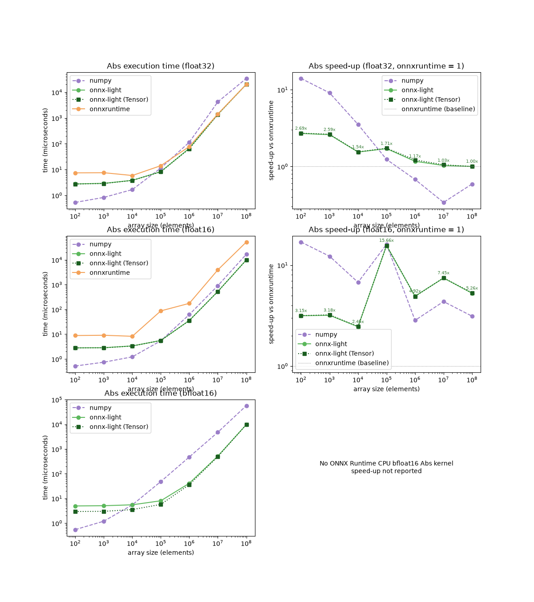
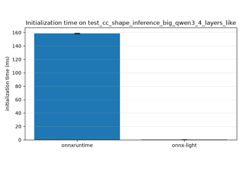
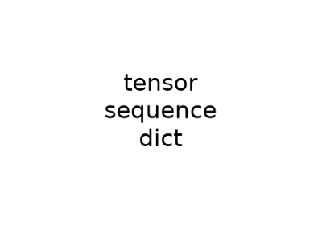

Note
Go to the end to download the full example code.
Benchmark Abs: onnxruntime vs onnx-light#
This example compares the built-in Abs kernel in onnx-light with
onnxruntime and numpy.abs() for vectors ranging from one hundred to
one hundred million elements. The comparison is repeated for three element
types: float32, float16 and bfloat16. The bfloat16 values rely
on the ml_dtypes NumPy extension, which provides a native bfloat16
dtype.
onnxruntime only ships a CPU Abs implementation for float32 and
float16; there is no bfloat16 kernel. The benchmark therefore skips the
onnxruntime measurement and speed-up plot for bfloat16.
The execution benchmark warms each runtime and reports median durations.
onnx-light is measured before the ONNX Runtime session is constructed:
keeping both persistent CPU pools in one process while alternating calls causes
one runtime’s spinning workers to perturb the other runtime’s measurement.
The two onnx-light series use the same prepared evaluator with either a
NumPy array or a pre-built runtime Tensor as input.
from __future__ import annotations
import os
import time
import matplotlib.pyplot
import ml_dtypes
import numpy
import onnxruntime
import onnx_light.onnx.helper as oh
from onnx_light.onnx import TensorProto, checker
from onnx_light.onnx.reference import ReferenceEvaluator
from onnx_light.onnx_py import _onnxpykernels
runtime = _onnxpykernels.runtime
ORT_MAX_IR_VERSION = 13
Element types under test#
Each entry holds the label used in the report, the ONNX TensorProto type,
the matching NumPy dtype and whether onnxruntime provides a CPU Abs
kernel for that type. bfloat16 is materialized through
ml_dtypes; onnxruntime has no bfloat16 Abs kernel, so it is
excluded from that comparison.
DTYPES = [
("float32", TensorProto.FLOAT, numpy.dtype(numpy.float32), True),
("float16", TensorProto.FLOAT16, numpy.dtype(numpy.float16), True),
("bfloat16", TensorProto.BFLOAT16, numpy.dtype(ml_dtypes.bfloat16), False),
]
def make_abs_model(elem_type: int):
"""Creates a dynamic one-dimensional Abs model for a given element type."""
graph = oh.make_graph(
[oh.make_node("Abs", ["X"], ["Y"])],
"abs_benchmark",
[oh.make_tensor_value_info("X", elem_type, ["N"])],
[oh.make_tensor_value_info("Y", elem_type, ["N"])],
)
model = oh.make_model(graph, opset_imports=[oh.make_opsetid("", 18)])
model.ir_version = min(model.ir_version, ORT_MAX_IR_VERSION)
checker.check_model(model)
return model
def measure(function, repeat: int, warmup: int = 3, number: int = 1) -> float:
"""Measures a callable after warm-up and returns its median time per call."""
for _ in range(warmup):
function()
timings = []
for _ in range(repeat):
start = time.perf_counter()
for _ in range(number):
function()
timings.append((time.perf_counter() - start) / number)
return float(numpy.median(timings))
Measurement grid#
Normal execution uses the complete logarithmic grid. Documentation tests use two small vectors to keep the gallery build fast.
if os.environ.get("UNITTEST_GOING") == "1":
size_grid = [100, 1_000]
minimum_repeat = 3
warmup = 1
else:
size_grid = [10**power for power in range(2, 9)]
minimum_repeat = 7
warmup = 3
def benchmark_dtype(label: str, elem_type: int, np_dtype, ort_supported: bool) -> dict:
"""Benchmarks the Abs kernel for a single element type.
Both runtimes receive inputs generated from the same seed and are warmed
before timing. All ``onnx-light`` measurements finish before the ONNX
Runtime session is constructed, keeping their persistent CPU pools from
perturbing each other. ``onnxruntime`` is only exercised when it provides a
CPU ``Abs`` kernel for ``elem_type``.
Returns:
A mapping with the measured ``sizes`` and, for each backend, the
median execution times. ``onnxruntime`` times are ``None`` when the
element type is unsupported.
"""
model = make_abs_model(elem_type)
model_bytes = model.SerializeToString()
onnx_light_session = ReferenceEvaluator(model)
def run_onnx_light(values):
"""Runs the built-in onnx-light Abs kernel."""
return onnx_light_session.run(None, {"X": values})[0]
def run_onnx_light_tensor(tensor):
"""Runs onnx-light with a pre-built runtime Tensor."""
return onnx_light_session.run(None, {"X": tensor})[0]
def make_input_tensor(values):
"""Creates a zero-copy runtime Tensor over a NumPy input."""
return runtime.tensor_from_numpy(
"X", int(elem_type), list(values.shape), values.view(numpy.uint8), copy=False
)
def run_onnxruntime(values):
"""Runs the ONNX Runtime Abs kernel."""
return ort_session.run(None, {"X": values})[0]
random_generator = numpy.random.default_rng(0)
rows_by_size = {}
for size in size_grid:
values = random_generator.uniform(-100.0, 100.0, size=size).astype(np_dtype)
expected = numpy.abs(values)
repeat = max(minimum_repeat, min(200, 2_000_000 // size))
number = max(1, min(20, 10_000_000 // size))
numpy_time = measure(lambda values=values: numpy.abs(values), repeat, warmup, number)
onnx_light_time = measure(
lambda values=values: run_onnx_light(values), repeat, warmup, number
)
input_tensor = make_input_tensor(values)
onnx_light_tensor_time = measure(
lambda tensor=input_tensor: run_onnx_light_tensor(tensor), repeat, warmup, number
)
numpy.testing.assert_array_equal(run_onnx_light(values), expected)
numpy.testing.assert_array_equal(run_onnx_light_tensor(input_tensor), expected)
rows_by_size[size] = [size, numpy_time, onnx_light_time, onnx_light_tensor_time, None]
if ort_supported:
ort_session = onnxruntime.InferenceSession(
model_bytes, providers=["CPUExecutionProvider"]
)
random_generator = numpy.random.default_rng(0)
for size in size_grid:
values = random_generator.uniform(-100.0, 100.0, size=size).astype(np_dtype)
expected = numpy.abs(values)
repeat = max(minimum_repeat, min(200, 2_000_000 // size))
number = max(1, min(20, 10_000_000 // size))
ort_time = measure(
lambda values=values: run_onnxruntime(values), repeat, warmup, number
)
numpy.testing.assert_array_equal(run_onnxruntime(values), expected)
rows_by_size[size][4] = ort_time
rows = [tuple(rows_by_size[size]) for size in size_grid]
for size, numpy_time, onnx_light_time, onnx_light_tensor_time, ort_time in rows:
ort_report = "n/a" if ort_time is None else f"{ort_time * 1e6:10.2f} us"
ratio_report = "n/a" if ort_time is None else f"{onnx_light_time / ort_time:5.2f}x"
print(
f"[{label:>8}] size={size:>9} | numpy={numpy_time * 1e6:10.2f} us | "
f"onnx-light={onnx_light_time * 1e6:10.2f} us | "
f"onnx-light (Tensor)={onnx_light_tensor_time * 1e6:10.2f} us | "
f"onnxruntime={ort_report} | onnx-light / onnxruntime={ratio_report}"
)
return {
"label": label,
"ort_supported": ort_supported,
"sizes": numpy.array([row[0] for row in rows]),
"numpy_times": numpy.array([row[1] for row in rows]),
"onnx_light_times": numpy.array([row[2] for row in rows]),
"onnx_light_tensor_times": numpy.array([row[3] for row in rows]),
"ort_times": None if not ort_supported else numpy.array([row[4] for row in rows]),
}
Measure steady-state execution for every element type#
[ float32] size= 100 | numpy= 0.53 us | onnx-light= 2.76 us | onnx-light (Tensor)= 2.75 us | onnxruntime= 7.44 us | onnx-light / onnxruntime= 0.37x
[ float32] size= 1000 | numpy= 0.83 us | onnx-light= 2.90 us | onnx-light (Tensor)= 2.86 us | onnxruntime= 7.53 us | onnx-light / onnxruntime= 0.39x
[ float32] size= 10000 | numpy= 1.66 us | onnx-light= 3.80 us | onnx-light (Tensor)= 3.78 us | onnxruntime= 5.86 us | onnx-light / onnxruntime= 0.65x
[ float32] size= 100000 | numpy= 11.42 us | onnx-light= 8.26 us | onnx-light (Tensor)= 8.17 us | onnxruntime= 14.10 us | onnx-light / onnxruntime= 0.59x
[ float32] size= 1000000 | numpy= 114.94 us | onnx-light= 66.69 us | onnx-light (Tensor)= 63.98 us | onnxruntime= 77.89 us | onnx-light / onnxruntime= 0.86x
[ float32] size= 10000000 | numpy= 4210.26 us | onnx-light= 1392.97 us | onnx-light (Tensor)= 1362.62 us | onnxruntime= 1434.12 us | onnx-light / onnxruntime= 0.97x
[ float32] size=100000000 | numpy= 34230.62 us | onnx-light= 20198.76 us | onnx-light (Tensor)= 20266.83 us | onnxruntime= 20218.62 us | onnx-light / onnxruntime= 1.00x
[ float16] size= 100 | numpy= 0.52 us | onnx-light= 2.80 us | onnx-light (Tensor)= 2.80 us | onnxruntime= 8.82 us | onnx-light / onnxruntime= 0.32x
[ float16] size= 1000 | numpy= 0.74 us | onnx-light= 2.84 us | onnx-light (Tensor)= 2.81 us | onnxruntime= 9.05 us | onnx-light / onnxruntime= 0.31x
[ float16] size= 10000 | numpy= 1.22 us | onnx-light= 3.35 us | onnx-light (Tensor)= 3.33 us | onnxruntime= 8.21 us | onnx-light / onnxruntime= 0.41x
[ float16] size= 100000 | numpy= 5.41 us | onnx-light= 5.56 us | onnx-light (Tensor)= 5.56 us | onnxruntime= 87.00 us | onnx-light / onnxruntime= 0.06x
[ float16] size= 1000000 | numpy= 61.84 us | onnx-light= 35.62 us | onnx-light (Tensor)= 35.76 us | onnxruntime= 175.24 us | onnx-light / onnxruntime= 0.20x
[ float16] size= 10000000 | numpy= 901.77 us | onnx-light= 526.65 us | onnx-light (Tensor)= 525.76 us | onnxruntime= 3926.12 us | onnx-light / onnxruntime= 0.13x
[ float16] size=100000000 | numpy= 16721.94 us | onnx-light= 9906.87 us | onnx-light (Tensor)= 9805.49 us | onnxruntime= 52133.10 us | onnx-light / onnxruntime= 0.19x
[bfloat16] size= 100 | numpy= 0.55 us | onnx-light= 4.96 us | onnx-light (Tensor)= 2.95 us | onnxruntime=n/a | onnx-light / onnxruntime=n/a
[bfloat16] size= 1000 | numpy= 1.20 us | onnx-light= 5.06 us | onnx-light (Tensor)= 3.00 us | onnxruntime=n/a | onnx-light / onnxruntime=n/a
[bfloat16] size= 10000 | numpy= 5.47 us | onnx-light= 5.51 us | onnx-light (Tensor)= 3.53 us | onnxruntime=n/a | onnx-light / onnxruntime=n/a
[bfloat16] size= 100000 | numpy= 48.16 us | onnx-light= 8.02 us | onnx-light (Tensor)= 5.73 us | onnxruntime=n/a | onnx-light / onnxruntime=n/a
[bfloat16] size= 1000000 | numpy= 476.39 us | onnx-light= 41.06 us | onnx-light (Tensor)= 36.17 us | onnxruntime=n/a | onnx-light / onnxruntime=n/a
[bfloat16] size= 10000000 | numpy= 4754.96 us | onnx-light= 515.66 us | onnx-light (Tensor)= 490.19 us | onnxruntime=n/a | onnx-light / onnxruntime=n/a
[bfloat16] size=100000000 | numpy= 56919.31 us | onnx-light= 9730.23 us | onnx-light (Tensor)= 9731.06 us | onnxruntime=n/a | onnx-light / onnxruntime=n/a
Plot execution time and relative speed#
One row is drawn per element type. The left panel shows raw inference time.
The right panel shows the speed-up relative to onnxruntime when it
provides a CPU kernel, on a logarithmic scale so that speed-ups and
slowdowns are equally readable around the baseline. No speed-up is reported
for bfloat16 because changing the baseline to NumPy would make that row
incomparable.
figure, axes = matplotlib.pyplot.subplots(
len(results), 2, figsize=(12, 4.5 * len(results)), squeeze=False
)
for row_index, result in enumerate(results):
label = result["label"]
sizes = result["sizes"]
numpy_times = result["numpy_times"]
onnx_light_times = result["onnx_light_times"]
onnx_light_tensor_times = result["onnx_light_tensor_times"]
ort_times = result["ort_times"]
time_axis = axes[row_index][0]
speedup_axis = axes[row_index][1]
time_axis.plot(sizes, numpy_times * 1e6, "o--", label="numpy", color="#9b7ec8")
time_axis.plot(sizes, onnx_light_times * 1e6, "o-", label="onnx-light", color="#5cb85c")
time_axis.plot(
sizes, onnx_light_tensor_times * 1e6, "s:", label="onnx-light (Tensor)", color="#1b5e20"
)
if ort_times is not None:
time_axis.plot(sizes, ort_times * 1e6, "o-", label="onnxruntime", color="#f4a259")
time_axis.set_xscale("log")
time_axis.set_yscale("log")
time_axis.set_xlabel("array size (elements)")
time_axis.set_ylabel("time (microseconds)")
time_axis.set_title(f"Abs execution time ({label})")
time_axis.legend()
if ort_times is None:
speedup_axis.axis("off")
speedup_axis.text(
0.5,
0.5,
"No ONNX Runtime CPU bfloat16 Abs kernel\nspeed-up not reported",
ha="center",
va="center",
transform=speedup_axis.transAxes,
)
continue
# The baseline itself is a flat line at 1.0, shown by the reference
# ``axhline`` below, so it is not plotted as its own series.
speedup_axis.plot(sizes, ort_times / numpy_times, "o--", label="numpy", color="#9b7ec8")
onnx_light_speedups = ort_times / onnx_light_times
speedup_axis.plot(sizes, onnx_light_speedups, "o-", label="onnx-light", color="#5cb85c")
for size, speedup in zip(sizes, onnx_light_speedups, strict=True):
speedup_axis.annotate(
f"{speedup:.2f}x",
(size, speedup),
xytext=(0, 6),
textcoords="offset points",
ha="center",
fontsize=7,
color="#3d803d",
)
speedup_axis.plot(
sizes,
ort_times / onnx_light_tensor_times,
"s:",
label="onnx-light (Tensor)",
color="#1b5e20",
)
speedup_axis.axhline(
1.0, color="grey", linewidth=0.8, linestyle=":", label="onnxruntime (baseline)"
)
speedup_axis.set_xscale("log")
speedup_axis.set_yscale("log")
speedup_axis.set_xlabel("array size (elements)")
speedup_axis.set_ylabel("speed-up vs onnxruntime")
speedup_axis.set_title(f"Abs speed-up ({label}, onnxruntime = 1)")
speedup_axis.legend()

onnx-light is expected to beat onnxruntime on the smallest float32
vector, where the fixed per-call overhead dominates.
float32_result = results[0]
float32_speedups = float32_result["ort_times"] / float32_result["onnx_light_times"]
assert float32_speedups[0] > 1.0, (
"onnx-light is expected to be faster than onnxruntime for the first (smallest) size, "
f"got a speed-up of {float32_speedups[0]:.2f}x for size {float32_result['sizes'][0]}"
)
figure.tight_layout()
figure.savefig("plot_abs_benchmark.png")
Total running time of the script: (0 minutes 14.855 seconds)
Related examples

Benchmark the initialization steps: onnxruntime vs onnx-light

Run an ONNX model casting a float tensor into an int2 tensor

Run the reference evaluator with tensor, sequence and dictionary inputs/outputs
Gallery generated by Sphinx-Gallery
Example last updated
- Date:
2026-08-20